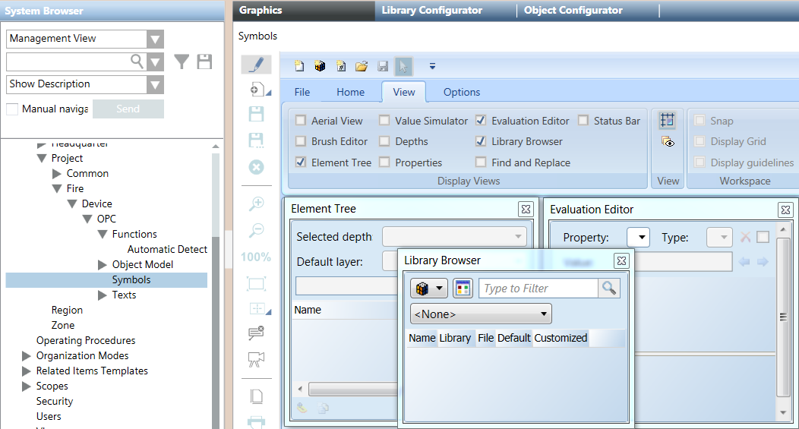
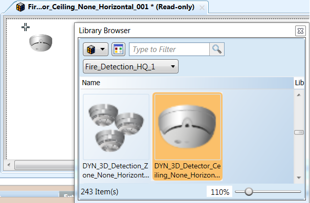
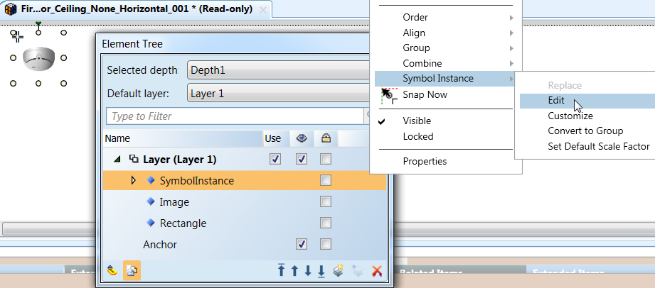
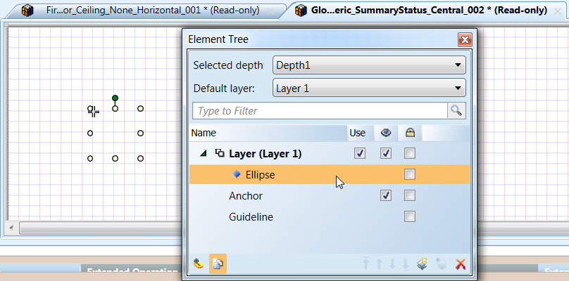
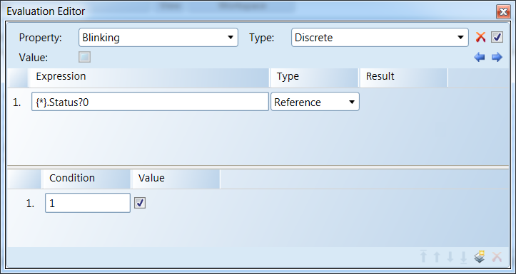
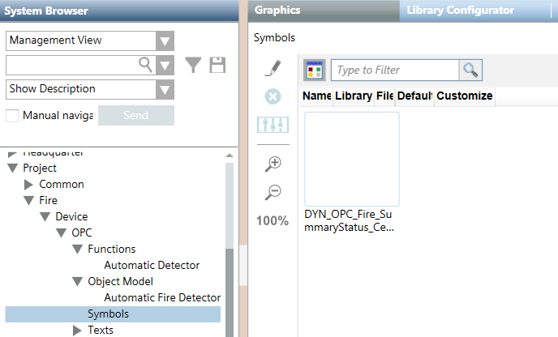

Configure the Background Image
- In the customized OPC library, select the symbol folder.
- Click the Graphics tab.
- Click Edit
 .
. - The Graphic Editor displays.
- In the View tab, enable the following views:
- Library Browser.
- Element Tree.
- Evaluation Editor.
- In the Library Browser view, proceed as follows (see Figure Selection of a Fire Symbol):
a. Select the fire detection library (for example, Fire_Detection_HQ_1).
b. Select a symbol with dynamic background (make sure the name begins with DYN_3D).
c. Right-click the symbol and select Edit. - The symbol displays.
- In the Element Tree view, proceed as follows (see Figures The Symbol Instance Editing and Selection of the Background Image):
a. Click Show all Elements at the bottom.
b. Expand the Layer tree.
c. Right-click SymbolInstance and select Symbol Instance > Edit.
NOTE: If the SymbolInstance item does not display, the symbol you chose has no animated background available. - A second editing pane displays with the background image selected.
d. Expand the Layer tree and select Ellipse. - In the Evaluation Editor view, proceed as follows (see Figure Settings for the Blinking Effect):
a. In the Property drop-down list, select Blinking.
b. In the Expression text field, type{*}.Status?0
c. In the Condition text field, type the OPC data point value corresponding to unacked (blinking) conditions, for example1.
d. Make sure the Value check box is selected.
NOTE: If other values require blinking, add more rows using the Insert new Condition icon at the bottom. On each row, enter a new value and check the Value check box. - Click Save As
 .
. - In the Save As window that displays, proceed as follows:
a. Select the symbol folder of the customized OPC library.
b. Rename the background image, for example:
DYN_OPC_Fire_SummaryStatus_Central_002
instead of the original:
DYN_All_Generic_SummaryStatus_Central_002
NOTE: Take note of the modified name of the background image. You will need it for the symbol image configuration.
c. Click Save.
- The background image displays in the Graphics tab of the symbol folder of the customized OPC library.





